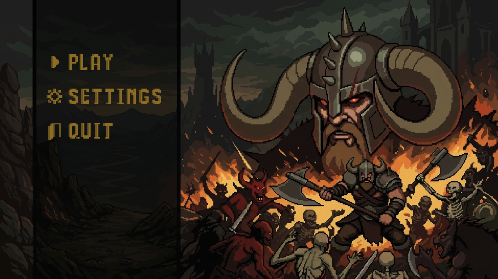
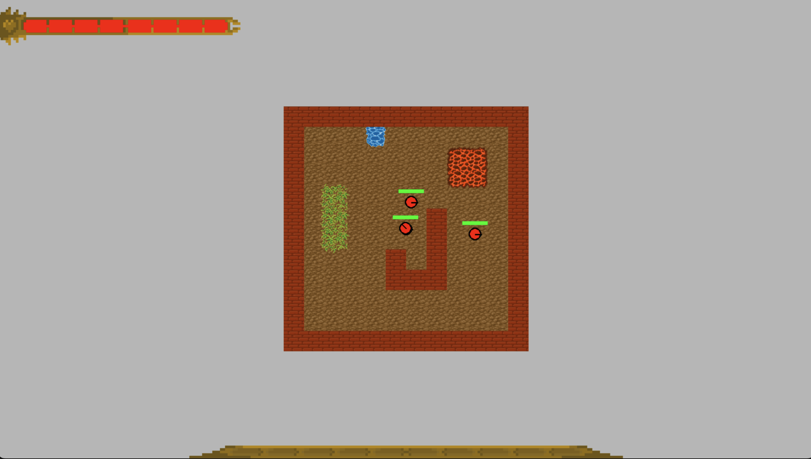
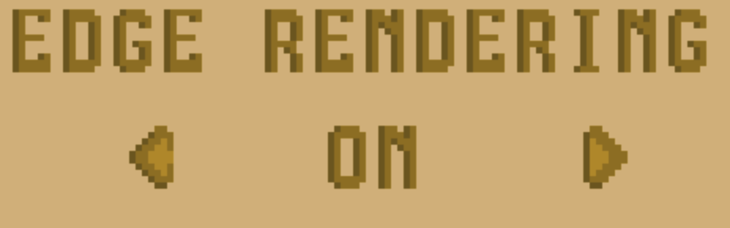
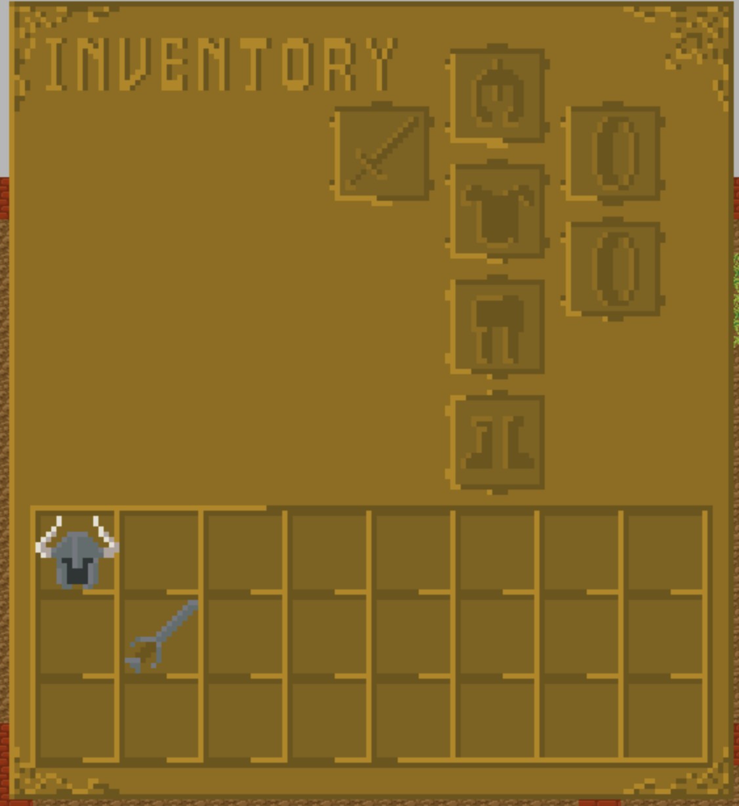

500Block hat das Tile Edge Rendering eingeführt & eine grundlegende Struktur für Ingame UI elemente eingeführt mitsammt einem beispiel Hauptmenü
+ Tile Edge rendering eingeführt, was momentan dazu dient, 3 Kantenübergänge zu malen
more details+ erste Version an Gamestates eingeführt, welche es ermöglichen verschiedene UI Menüs zu malen (Playing, Esc_menü, Main_menu, Settings)
+ erste Version eines Hauptmenüs erstellt
+ UI Manager erstellt, der alle unterelemente managed, also die functionen update, draw, handle_event aufruft
+ Erstes Test UI element eingefügt, was ein basic UI Button ist mit sammt funktionalität
more details500Block hat einige Texturen hinzugefügt, für verschiedene UI anwendungszwecke, sowie das Hauptmenü finalisiert, mit neu erstelltem Texturen Button
+ erste Texturenversion erstellt für Buffs, Inventar, Ingame UI, andere UI elemente & Hauptmenühintergrund
+ das Hauptmenü soweit überarbeitet, dass es in einem funktionalen, und erstmal finalen Zusatnd ist
+ Einen Textur Button hinzugefügt der statt mit Texten mit Texturen Arbeitet
+ Ein erstes Ingame UI erstellt, welches die bestehende lifebar einbaut
more details

500Block hat einige Texturen aktualisiert & hinzugefügt, die Hauptmenüschrift nun als malbare Schrift erstellt sowie ein Einstellungsmenü grundlegend angelebt mit neuem Optionen Button
+ Texturen für ein erstes Itemset, Menu Font Schrift, Settings Hintergrund hinzugefügt
+ eine funktionierende Levelbar implementiert, mit xp speicherung in player mitsammt funktionen zur Level verwaltung
+ Menu Font klasse implementiert, welche es erlaubt, text aus strings in grafiktext (wie im main Menu) umzuwandeln und zu malen mit einigen Helfermethoden für unterschiedliche Zwecke
+ Einen Option Button hinzugefügt, welcher es erlaubt, durch verschiedene Optionen durchzurotieren mit links / rechts pfeil
+ Eine erste version eines Einstellungemenüs erstellt
more details
500Block **
+ Der TextureButton kann jetzt auch einen Text Modus nutzen, bei dem der Inhalt eines Strings nun in der Mitte steht
+ ein Reward system implementiert, dass nun auch Gegner XP geben, und dass in der Levelbar anzeigt
+ Anpassungen am Einstellungsmenü, sodass diese jetzt auch geändert werden können durch das Einstellung Menü
+ Anpassungen am ESC Menü von Valk0 damit die Knöpfe auch Korrekt angezeigt werden
more details500Block ein paar änderungen am Einstellungs Menü, aber hauptsächlich eine Implementierung des Inventars mit drag & drop, Items mitsammt definition in externer Datei
+ Inventar System hinzugefügt, dass Drag and Drop implementiert, und Items von den Gegnern Speichern kann
+ Items die in einer JSON Datei definiert sind, sowie optionale Consumables für die zukunft
+ Diese Items werden mit einem Item loader ins Spiel Geladen
+ Änderungen für mehrere Seiten im Einstelungs Menü
more details+ die Angriffsrichtung wird nun von der Mausposition auf dem Bildschirm bestimmt
more details